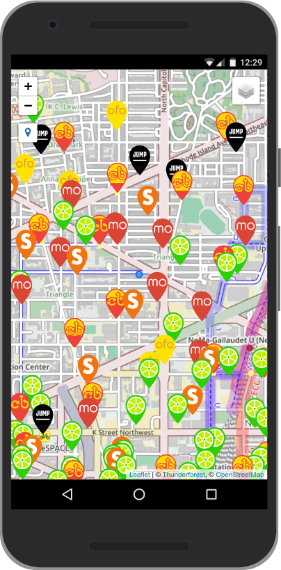

class: center, middle # DC Bike Finder<br>([share.bikehero.io](https://share.bikehero.io)) ## Daniel Schep<br><i class="fab fa-twitter"></i> @schep_<br><i class="fab fa-github"></i> dschep --- class: center, middle # .huge[I 💓 🚲] # .huge[I 💖 🗺️] --- # What is it? .max-height.float-right[] A Progressive Web Application to find any brand of bikeshare (dockless or not) in the Washington, DC metro area. --- # A little history .max-height[] .fxos[] --- class: center, middle # .huge[<a href="./demo/" target="_blank"/>✨Demo!✨</a>] --- class: center, middle # Architecture  --- # API Report Card .float-right.thanks[ 💓With Loving Thanks💖 <br>  <br>  <br>  ] | Provider | Initial Grade | Current Grade | | ------------- | ------------- | |  | A- | A | |  | A+ | A+ | |  | F | A | |  | D | A | |  | D | A | |  | D | D | --- # Progressive Web App? .max-height.float-right[ ] Manifest ServiceWorker HTTPS ### Support ✅Firefox ✅Chrome ⏲️ Safari ⏲️ Edge --- class: center, middle # One more thing... --- class: center, middle # .huge[😍 JUMP] --- class: center, middle # Introducing JUMPStart! <small>([jumpstart.bikehero.io](https://jumpstart.bikehero.io))</small> .max-height[] .max-height[] --- # That's it! <i class="fab fa-twitter"></i> @schep_ | <i class="fab fa-github"></i> dschep ### Project Links * https://share.bikehero.io | https://github.com/dschep/dc-bike-finder * https://jumpstart.bikehero.io | https://github.com/dschep/jumpstart ### Slides https://dschep.github.io/bikesharehacknight-2018-02-13/ ### APIs * https://twitter.com/DDOTDC/status/960885109141499904 * https://github.com/ubahnverleih/WoBike